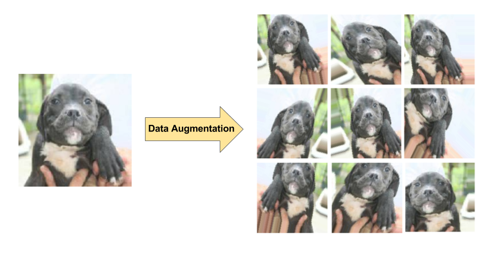

L is for Labelling Data
Having high quality labelled data is critical to training useful supervised learning models. This labelled training data needs to be directly relevant to the real world task you are trying to accomplish. Unfortunately, getting this labelled data can be very challenging in a lot of cases. This is for a couple reasons:
- Labelling data is time intensive and also really boring/tedious. You often need hundreds or thousands of examples (or more!) so it takes a while to create a labelled training set. People are also incentivized/rewarded for training a useful ML model, as compared to labelling 1000s of points.
- Having high quality labels often requires input from subject matter experts (whose time is valuable). For example, looking at x-ray images to label the images to have a given disease. This would require a medical professional who may not have the time required to label 1000s of images. Even if the data scientists themselves are doing the labelling, they are also typically highly paid professionals who may not have the time or commitment from management to spend hours labelling data.
Labelling data in practice
Fortunately in the real world there are a few ways to make getting a labelled data set easier (not easy, but easier).
Pay someone else to do it
There are an increasing number of services where you can outsource your data labelling tasks. This includes Amazon’s SageMaker Ground Truth or Google’s AI Platform Data Labelling Service. These services can work if you have a large budget. However, if the dataset you are trying to label is sensitive (e.g. medical records) or requires a large amount of subject matter expertise then you may not be able to use these services. Alternatively, just pay grad students to label data do research.
Make people do it for free
You’ve probably needed to go through an image based captcha (e.g. “select all the pictures with traffic lights”) in order to log into a popular web service. If you’re a large organization or have a product that many people use, this can be an effective way to get people to label data for free.

Use pretrained models or datasets
In some cases there may be publicly available models (e.g. modelzoo) that have been trained on a similar task to the one you’re interested in. Similarly, there are publicly available labelled datasets (e.g. kaggle datasets) that you could train your own model on. These datasets/models could come from academic researchers, companies such as Google, or open source projects. If the pretrained model gives acceptable results for your problem then great! It is worth thinking about how your dataset/task is different than the one the model was trained on. If your data diverges from the original dataset over time, then your model will be less accurate. This is known as model drift. It’s possible to fine-tune these pretrained models onto your dataset/labels to improve their performance for your task. I’ll talk about that in more detail in T is for Transfer Learning.
Using unsupervised learning
Instead of labelling each point individually, you can often try clustering your data beforehand. This allows you to label groups of data instead of each individual point.

You can build this clustering and labelling system yourself or use a labelling tool which does the same thing. Some of these include (most you need to pay for):
- platform.ai for images
- prodigy for text
- Snorkel has a paid and a free product
Data augmentation
One of the reasons for having large training sets is to have many examples for the model to learn patterns. If you are trying to classify images of dogs you need to have many different pictures of different breeds. The pictures need to be from different angles (head on, side view, etc.) to be able to recognize the dogs in different scenarios. One way to increase the size of your dataset is to use data augmentation. If you have a picture you can generate new labelled data by transforming the original image. This might include blurring, cropping, or rotating the image. Using this technique you can get multiple labelled data points for each image that was labelled by a human. Having multiple versions of an image with varying amounts of noise will make your model more robust as well. Data augmentation can be applied to other data types as well (e.g. text) but it’s slightly trickier than doing it with images.

Active learning
This is a technique where you can use a ML model to help you label your data. It works as follows:
- Label a small amount of your training set (e.g. 10%)
- Train a ML model on the labelled data you have
- Use that ML model to predict labels for the other 90%. You can verify the labels for the predictions where the model was not very confident. You should also randomly check predictions where the model was confident just to check that it is working as intended.
Using this method can help speed up the data labelling process and give you a better model overall.
Summary
Getting labelled data can be one of the most challenging parts of training a supervised learning model. If you aren’t able to throw money at the problem (most of us aren’t!) then there are many techniques you can try to increase your productivity when labelling data such as using labelling tools or data augmentation. When using existing datasets and models make sure to think about the similarities and differences between that dataset and the problem you want to tackle.